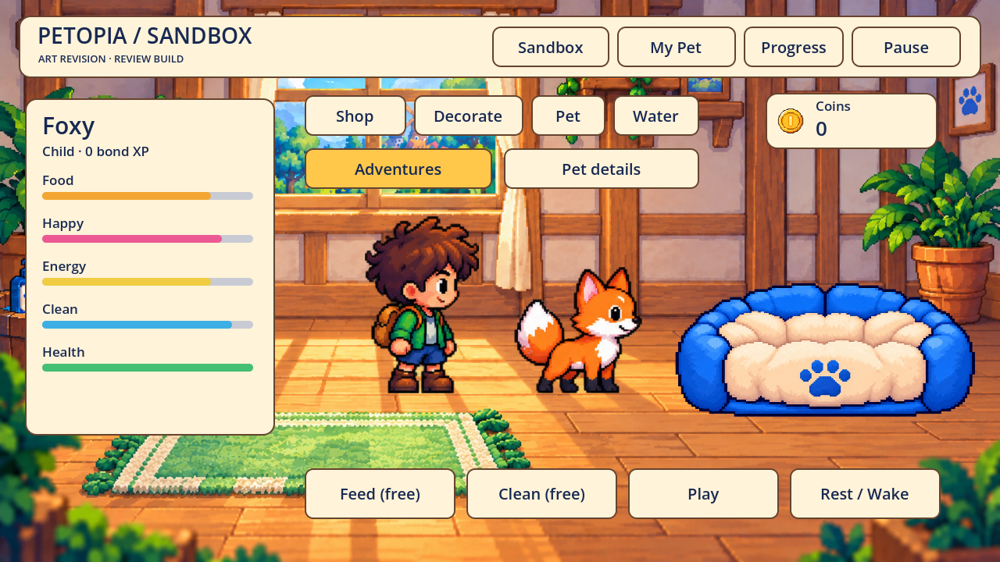
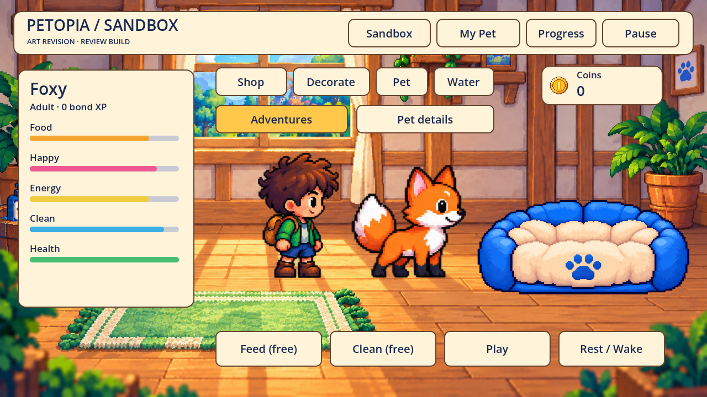

Foxy grows; the explorer and bed stay fixed
A38 correction. Previously the room had only baby / non-baby standing sizes and one baby baked into the sleeping bed. Standing now has four gradual sizes. Sleeping Foxy is a separate age-sized sprite behind the same front bolster. The native age caption updates live.
The GDD defines age thresholds, not exact body ratios. The listed ratios are current presentation targets for review. Teen/adult still reuse the child illustration at different sizes; distinct mature identity art and complete growth/action animations remain pending.
Baby · 0–6 days
Standing height ≈57% of the explorer. Existing baby identity.Child · 7–29 days

Standing height ≈71% of the explorer. Existing child identity.Teen · 30–59 days
Standing height ≈81% of the explorer. Provisional size using child identity; mature art pending.Adult · 60+ days

Standing height ≈90% of the explorer. Provisional size using child identity; mature art pending.
Sixteen actual Godot frames from an isolated healthy-needs age fixture. Same camera, child scale and furniture; only pet age/pose change.30 new regression checks cover actual sprite heights, age thresholds, live labels, resize, sleeping fit, waking and adult sleep after restart.401 aggregate passing checks;87 relevant adoption/scene/growth checks and39 mobile checks rerun for this revision. No save schema/writer, age timing or adventure collider changes. Physical devices and final visual approval remain open.
Built-in image_gen sleeping Foxy source · exact prompt · regions, pivots and provisional sizes · verification. Source capture: tools/capture_home_growth.gd.